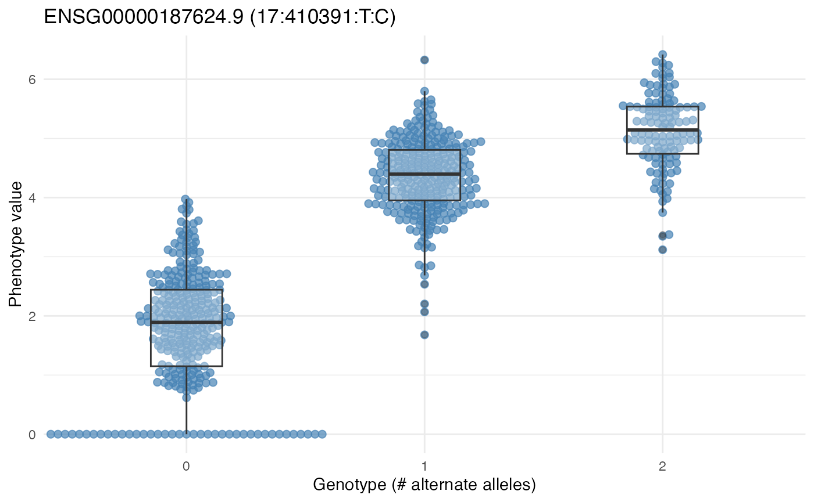

eQTL mapping with tQTLExperiment and tensorQTL
Claude Sonnet + Vincent Carey
2026-07-10
Source:vignettes/tQTLExperiment.Rmd
tQTLExperiment.RmdOverview
tQTLExperiment wraps the tensorQTL GPU-accelerated eQTL mapping tool in a SummarizedExperiment-style container. The key design principle is a two-step workflow that keeps R and Python in separate environments:
-
prepareTQTL()— writes phenotype and covariate files to a directory and returns the completepython -m tensorqtlcommand string. - The user runs that command in a terminal with tensorQTL installed.
-
readTQTL()— reads the output files back into R as GRanges.
This avoids all R/Python environment conflicts (conda PATH issues, rpy2 segfaults, duplicate OpenMP runtimes).
Genotype data are represented lazily via BEDMatrix — the PLINK .bed file is never loaded into R memory. This makes it practical to work with whole-genome genotype files containing millions of variants.
Installation
if (!requireNamespace("BiocManager", quietly = TRUE))
install.packages("BiocManager")
BiocManager::install("vjcitn/tQTLExperiment")tensorQTL must be installed in a Python environment:
pip install tensorqtlMAGE example data
This vignette uses data from the MAGE study (Multi-Ancestry Genomics, Epigenomics, and Transcriptomics), a multi-ancestry eQTL resource. The CSHLvc2026 companion package provides cached access to chromosome 17 genotypes and a pre-filtered pseudobulk B-cell SummarizedExperiment.
library(tQTLExperiment)
#> Warning: package 'BiocGenerics' was built under R version 4.6.1
#> Warning: replacing previous import 'shiny::dataTableOutput' by
#> 'DT::dataTableOutput' when loading 'tQTLExperiment'
#> Warning: replacing previous import 'shiny::renderDataTable' by
#> 'DT::renderDataTable' when loading 'tQTLExperiment'
if (!requireNamespace("CSHLvc2026")) BiocManager::install("vjcitn/CSHLvc2026")
library(CSHLvc2026)
data(mageSEfilt, package = "CSHLvc2026")
mageSEfilt
#> class: RangedSummarizedExperiment
#> dim: 15116 731
#> metadata(2): source filt
#> assays(1): pseudocounts
#> rownames(15116): ENSG00000227232.5 ENSG00000233750.3 ...
#> ENSG00000270726.6 ENSG00000182484.15
#> rowData names(3): shortid symbol gene_biotype
#> colnames(731): HG00096 HG00100 ... NA21129 NA21130
#> colData names(13): SRA_accession internal_libraryID ...
#> RNAQubitTotalAmount_ng RINThe genotype data live in PLINK format on OSN cloud storage and are downloaded once via BiocFileCache:
plink_paths <- cache_mage_chr17_plink()
plpre <- tools::file_path_sans_ext(plink_paths[["bed"]])Building a tQTLExperiment
Covariate matrix
tensorQTL requires numeric covariates. We build a model matrix from colData using model.matrix(), then drop the intercept column — tensorQTL does not expect one. Dropping the first column after construction (rather than using ~ 0 + ...) preserves reference-level dummy coding for factor variables.
cd <- as.data.frame(colData(mageSEfilt))
mm <- model.matrix(~ batch + population + sex, data = cd)
mm <- mm[, -1, drop = FALSE] # remove (Intercept)Constructor
tQTLExperimentFromRSE() takes an existing RangedSummarizedExperiment and PLINK prefix, attaches the lazy genotype matrix, and optionally records the genome build in seqinfo.
tqe <- tQTLExperimentFromRSE(
se = mageSEfilt,
plinkPrefix = plpre,
covariateMatrix = mm,
genome = "hg38"
)
tqeAdding gene symbols
addGeneSymbols() looks up HGNC names via EnsDb.Hsapiens.v79 and adds a gene_name column to mcols(rowRanges(tqe)). Ensembl version suffixes (e.g. .3) are stripped automatically.
tqe <- addGeneSymbols(tqe)
head(mcols(rowRanges(tqe))[, c("phenotype_id", "gene_name")])Running tensorQTL
Subset to chr17 features
The PLINK file covers chromosome 17 only, so we filter the SE to matching features before writing the phenotype file.
is_17 <- as.character(seqnames(rowRanges(tqe))) == "chr17"
tqe17 <- tqe[which(is_17), ]
dim(tqe17)prepareTQTL
prepareTQTL() writes pheno.bed and covariates.tsv to outDir and returns the shell command. The built-in --maf_threshold flag is one of tensorQTL’s key advantages — no pre-filtering step is required.
outdir <- "~/mage_tqtl_run"
dir.create(outdir, showWarnings = FALSE)
cmd <- prepareTQTL(
tqe17,
outDir = outdir,
mode = "cis_nominal",
mafThreshold = 0.05
)
cat(cmd, "\n")The printed command looks like:
python3 -m tensorqtl /path/to/CCDG_mage_chr17 ~/mage_tqtl_run/pheno.bed \
~/mage_tqtl_run/tqtl_out --mode cis_nominal --maf_threshold 0.05 \
--window 1000000 -o ~/mage_tqtl_run \
--covariates ~/mage_tqtl_run/covariates.tsvPaste this into a terminal where your tensorQTL conda environment is active:
conda activate plink-env
KMP_DUPLICATE_LIB_OK=TRUE <paste command>readTQTL
Once tensorQTL finishes, load results back into R. Passing x = tqe17 propagates the genome build and gene symbols automatically.
res <- readTQTL(outdir, mode = "cis_nominal", x = tqe17)
res$pairsExploring results
pairs <- res$pairs
# top associations by nominal p-value
pairs[order(pairs$pval_nominal)][1:10,
c("gene_name", "variant_id", "af", "slope", "pval_nominal")]
# associations for a specific gene
tp53bp1 <- pairs[pairs$gene_name == "TP53BP1" & !is.na(pairs$gene_name)]
tp53bp1[order(tp53bp1$pval_nominal)][1:5]
# distribution of nominal p-values
hist(pairs$pval_nominal, breaks = 50,
main = "tensorQTL nominal p-values (chr17, cis)",
xlab = "p-value")Demo data
The package includes two datasets for testing and exploration.
Small example (chr22, 20 genes)
For testing object construction without external dependencies:
exdir <- system.file("extdata", package = "tQTLExperiment")
tqe_ex <- tQTLExperiment(
plinkPrefix = file.path(exdir, "chr22-n100"),
phenoFile = file.path(exdir, "mean-pheno-n100.bed"),
genome = "hg38"
)
#> Extracting number of samples and rownames from chr22-n100.fam...
#> Extracting number of variants and colnames from chr22-n100.bim...
tqe_ex
#> class: tQTLExperiment
#> features: 20 samples: 100
#> assays( 1 ): pheno
#> rowRanges: GRanges with 20 features
#> colData( 0 ) covariates:
#> geno: 100 samples x 69638 variants [BEDMatrix - lazy]
#> plinkPrefix: /private/var/folders/yw/gfhgh7k565v9w83x_k764wbc0000gp/T/RtmpZyaoNi/temp_libpatha318583333e0/tQTLExperiment/extdata/chr22-n100
#> use prepareTQTL() to write inputs and get CLI commandRealistic demo (chr17, 50 genes, pre-computed results)
Pre-computed tensorQTL cis_nominal results that demonstrate the full workflow:
cc = cache_demo_data()
#> [ cache hit ] covariates.tsv
#> [ cache hit ] mage_chr17_cis.rda
#> [ cache hit ] pheno.bed
#> [ cache hit ] tqtl_out.cis_qtl_pairs.17.parquet
#> [ cache hit ] tqtl_out.tensorQTL.cis_nominal.log
#> [ complete ] All demo files cached in: /Users/vincentcarey/Library/Caches/org.R-project.R/R/BiocFileCache/tqtlExperiment_demodir
demodir = dirname(cc$log)
# Load results: 71k+ feature-variant pairs on chr17
res <- readTQTL(demodir, mode = "cis_nominal")
res$pairs |> head()
#> GRanges object with 6 ranges and 10 metadata columns:
#> seqnames ranges strand | phenotype_id variant_id
#> <Rle> <IRanges> <Rle> | <character> <character>
#> [1] 17 114101 * | ENSG00000280279.1 17:114101:G:A
#> [2] 17 114226 * | ENSG00000280279.1 17:114226:A:G
#> [3] 17 116159 * | ENSG00000280279.1 17:116159:G:C
#> [4] 17 116270 * | ENSG00000280279.1 17:116270:G:C
#> [5] 17 116354 * | ENSG00000280279.1 17:116354:C:T
#> [6] 17 118358 * | ENSG00000280279.1 17:118358:C:T
#> start_distance end_distance af ma_samples ma_count pval_nominal
#> <integer> <integer> <numeric> <integer> <integer> <numeric>
#> [1] 37236 37235 0.4500684 510 658 0.857064
#> [2] 37361 37360 0.1976744 247 289 0.441229
#> [3] 39294 39293 0.4507524 515 659 0.883984
#> [4] 39405 39404 0.2647059 326 387 0.329784
#> [5] 39489 39488 0.4863201 515 711 0.805759
#> [6] 41493 41492 0.0978112 136 143 0.516072
#> slope slope_se
#> <numeric> <numeric>
#> [1] -0.00633339 0.0351502
#> [2] 0.03399045 0.0441110
#> [3] -0.00517267 0.0354354
#> [4] 0.03938431 0.0403842
#> [5] -0.00807438 0.0328232
#> [6] -0.04154835 0.0639453
#> -------
#> seqinfo: 1 sequence from an unspecified genome; no seqlengthsTop associations by nominal p-value:
top_hits <- res$pairs[order(res$pairs$pval_nominal)][1:10]
top_hits[, c("phenotype_id", "variant_id", "pval_nominal", "slope")]
#> GRanges object with 10 ranges and 4 metadata columns:
#> seqnames ranges strand | phenotype_id variant_id
#> <Rle> <IRanges> <Rle> | <character> <character>
#> [1] 17 35244527 * | ENSG00000166750.10 17:35244527:G:A
#> [2] 17 76711004 * | ENSG00000182534.14 17:76711004:CGTCGCCG..
#> [3] 17 50547162 * | ENSG00000006282.21 17:50547162:A:C
#> [4] 17 76710259 * | ENSG00000182534.14 17:76710259:A:T
#> [5] 17 76710267 * | ENSG00000182534.14 17:76710267:A:T
#> [6] 17 76710351 * | ENSG00000182534.14 17:76710351:G:A
#> [7] 17 76710142 * | ENSG00000182534.14 17:76710142:T:C
#> [8] 17 76710264 * | ENSG00000182534.14 17:76710264:G:A
#> [9] 17 410391 * | ENSG00000187624.9 17:410391:T:C
#> [10] 17 410351 * | ENSG00000187624.9 17:410351:G:T
#> pval_nominal slope
#> <numeric> <numeric>
#> [1] 5.51378e-218 1.728871
#> [2] 2.62162e-200 -1.964368
#> [3] 1.88099e-196 -0.931014
#> [4] 1.55405e-190 -1.937363
#> [5] 1.55405e-190 -1.937363
#> [6] 1.55405e-190 -1.937363
#> [7] 5.61979e-187 -1.925138
#> [8] 3.13994e-178 -1.881565
#> [9] 4.92694e-169 1.935477
#> [10] 6.18071e-169 1.935662
#> -------
#> seqinfo: 1 sequence from an unspecified genome; no seqlengths
data(mageSEfilt, package="CSHLvc2026")
plink_paths <- cache_mage_chr17_plink()
#> [ cache hit ] CCDG_mage_chr17.fam
#> [ cache hit ] CCDG_mage_chr17.bim
#> [ cache hit ] CCDG_mage_chr17.bed
#> [ validate ] Checking .bed magic bytes ...
#> [ validate ] .bed magic bytes OK.
plpre <- tools::file_path_sans_ext(plink_paths[["bed"]])
cd <- as.data.frame(colData(mageSEfilt))
mm <- model.matrix(~ batch + population + sex, data = cd)
mm <- mm[, -1, drop = FALSE] # remove (Intercept)
tqe <- tQTLExperimentFromRSE(
se = mageSEfilt,
plinkPrefix = plpre,
covariateMatrix = mm,
genome = "hg38"
)
#> Extracting number of samples and rownames from CCDG_mage_chr17.fam...
#> Extracting number of variants and colnames from CCDG_mage_chr17.bim...
tqe
#> class: tQTLExperiment
#> features: 15116 samples: 731
#> assays( 1 ): pseudocounts
#> rowRanges: GRanges with 15116 features
#> colData( 27 ) covariates: batch, populationASW, populationBEB, populationCDX ...
#> geno: 731 samples x 2075523 variants [BEDMatrix - lazy]
#> plinkPrefix: /Users/vincentcarey/Library/Caches/org.R-project.R/R/BiocFileCache/CCDG_mage_chr17_plink/CCDG_mage_chr17
#> use prepareTQTL() to write inputs and get CLI command
plotGenotypeEffect(tqe, "17:410391:T:C", "ENSG00000187624.9")
Session info
sessionInfo()
#> R version 4.6.0 (2026-04-24)
#> Platform: aarch64-apple-darwin23
#> Running under: macOS Sequoia 15.7.7
#>
#> Matrix products: default
#> BLAS: /Library/Frameworks/R.framework/Versions/4.6/Resources/lib/libRblas.0.dylib
#> LAPACK: /Library/Frameworks/R.framework/Versions/4.6/Resources/lib/libRlapack.dylib; LAPACK version 3.12.1
#>
#> locale:
#> [1] en_US.UTF-8/en_US.UTF-8/en_US.UTF-8/C/en_US.UTF-8/en_US.UTF-8
#>
#> time zone: America/New_York
#> tzcode source: internal
#>
#> attached base packages:
#> [1] stats4 stats graphics grDevices utils datasets methods
#> [8] base
#>
#> other attached packages:
#> [1] CSHLvc2026_0.98.8 tQTLExperiment_0.1.28
#> [3] arrow_24.0.0 SummarizedExperiment_1.43.0
#> [5] Biobase_2.73.1 GenomicRanges_1.65.0
#> [7] Seqinfo_1.3.0 IRanges_2.47.2
#> [9] S4Vectors_0.51.5 BiocGenerics_0.59.8
#> [11] generics_0.1.4 MatrixGenerics_1.25.0
#> [13] matrixStats_1.5.0 BiocStyle_2.41.0
#>
#> loaded via a namespace (and not attached):
#> [1] DBI_1.3.0 httr2_1.2.3 rlang_1.2.0
#> [4] magrittr_2.0.5 otel_0.2.0 compiler_4.6.0
#> [7] RSQLite_3.53.3 png_0.1-9 systemfonts_1.3.2
#> [10] vctrs_0.7.3 pkgconfig_2.0.3 crayon_1.5.3
#> [13] fastmap_1.2.0 dbplyr_2.6.0 XVector_0.53.0
#> [16] labeling_0.4.3 promises_1.5.0 rmarkdown_2.31
#> [19] UCSC.utils_1.9.0 ggbeeswarm_0.7.3 ragg_1.5.2
#> [22] purrr_1.2.2 bit_4.6.0 xfun_0.59
#> [25] cachem_1.1.0 GenomeInfoDb_1.49.1 jsonlite_2.0.0
#> [28] blob_1.3.0 later_1.4.8 DelayedArray_0.39.3
#> [31] R6_2.6.1 bslib_0.11.0 RColorBrewer_1.1-3
#> [34] jquerylib_0.1.4 Rcpp_1.1.1-1.1 bookdown_0.47
#> [37] assertthat_0.2.1 knitr_1.51 httpuv_1.6.17
#> [40] Matrix_1.7-5 tidyselect_1.2.1 dichromat_2.0-0.1
#> [43] abind_1.4-8 yaml_2.3.12 curl_7.1.0
#> [46] lattice_0.22-9 tibble_3.3.1 withr_3.0.3
#> [49] shiny_1.14.0 KEGGREST_1.53.4 S7_0.2.2
#> [52] evaluate_1.0.5 desc_1.4.3 BEDMatrix_2.0.4
#> [55] BiocFileCache_3.3.0 crochet_2.3.0 Biostrings_2.81.3
#> [58] pillar_1.11.1 BiocManager_1.30.27 filelock_1.0.3
#> [61] DT_0.34.0 ggplot2_4.0.3 scales_1.4.0
#> [64] xtable_1.8-8 glue_1.8.1 tools_4.6.0
#> [67] data.table_1.18.4 fs_2.1.0 grid_4.6.0
#> [70] AnnotationDbi_1.75.0 beeswarm_0.4.0 vipor_0.4.7
#> [73] cli_3.6.6 rappdirs_0.3.4 textshaping_1.0.5
#> [76] S4Arrays_1.13.0 dplyr_1.2.1 gtable_0.3.6
#> [79] sass_0.4.10 digest_0.6.39 SparseArray_1.13.2
#> [82] htmlwidgets_1.6.4 farver_2.1.2 memoise_2.0.1
#> [85] htmltools_0.5.9 pkgdown_2.2.0 lifecycle_1.0.5
#> [88] httr_1.4.8 mime_0.13 bit64_4.8.2